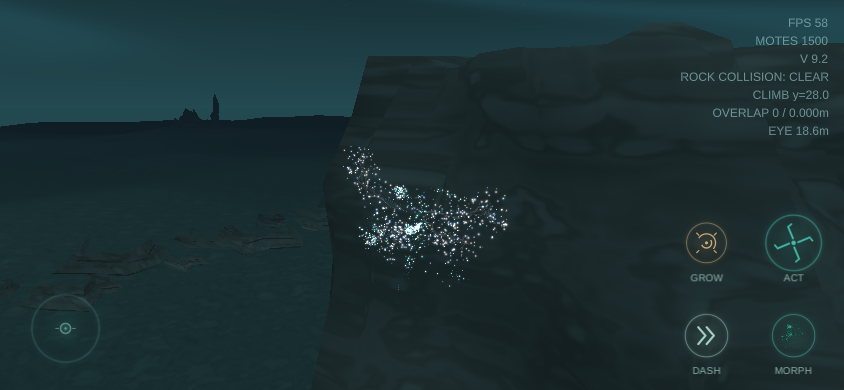
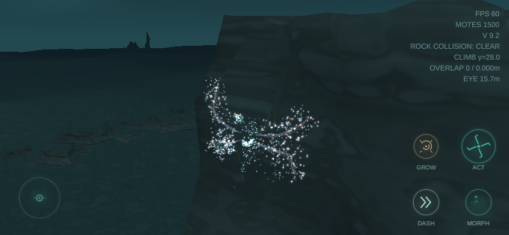
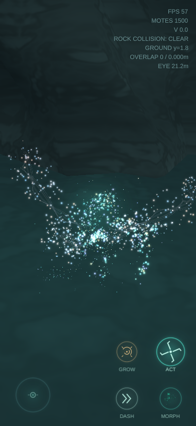
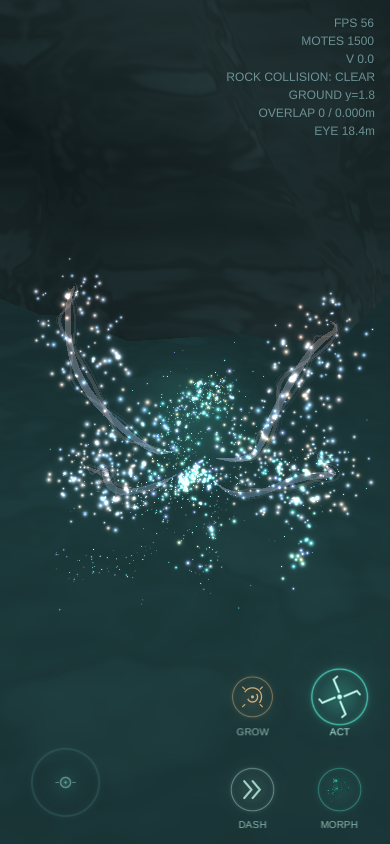
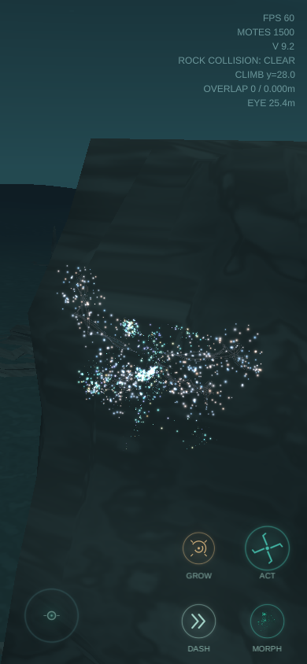
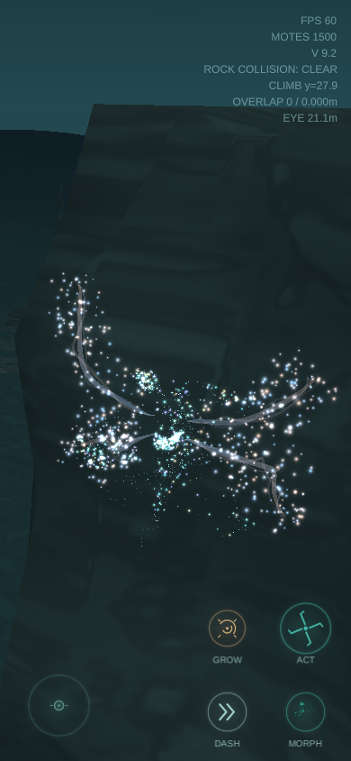

WISP モーションの修正前後
同一操作で実行したWebGLの実画面。岩登り中の4本の接地点、ACT時の画面内の収まり、カメラ距離を比較。撮影はMacのChrome for Testingで、実機iPhoneの性能測定ではありません。
横画面：岩登り（高度約28m）


縦画面：ACT長押し


縦画面：岩登り（高度約28m）


同一操作で実行したWebGLの実画面。岩登り中の4本の接地点、ACT時の画面内の収まり、カメラ距離を比較。撮影はMacのChrome for Testingで、実機iPhoneの性能測定ではありません。





